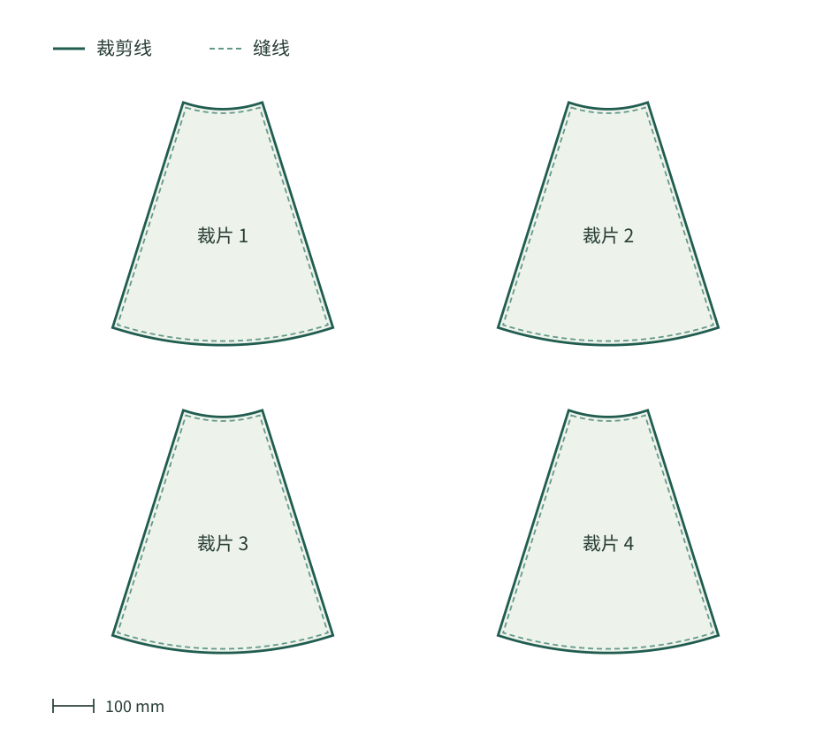
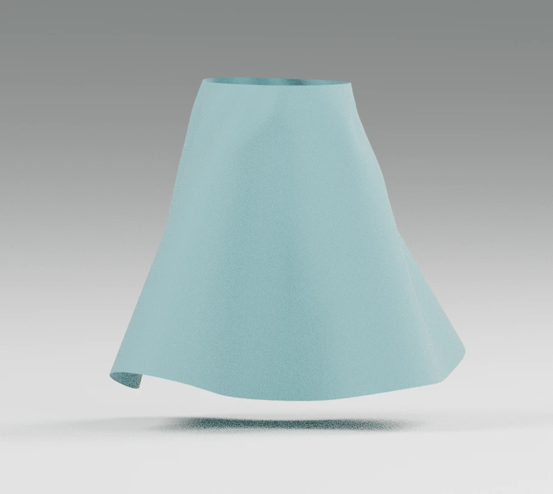
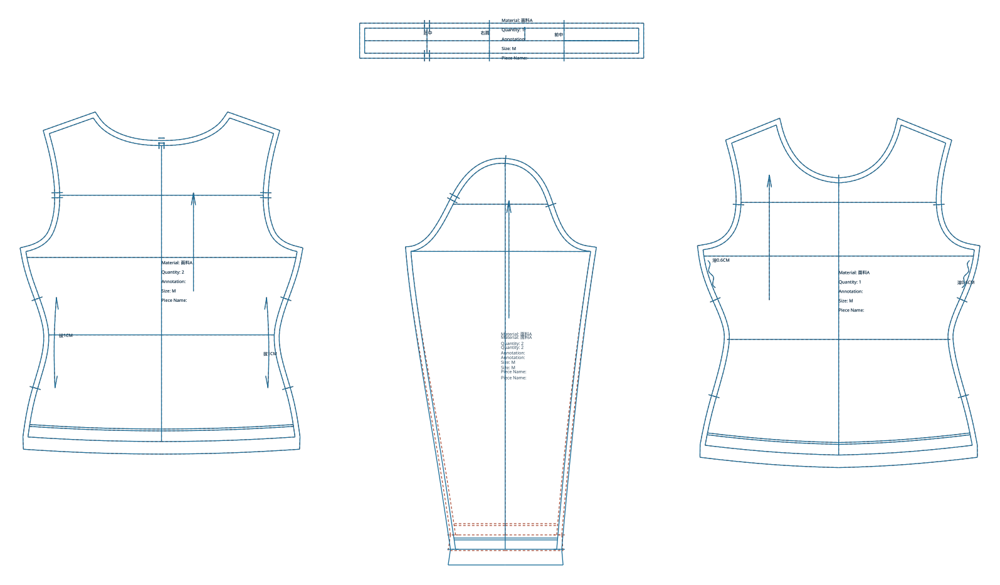

CAD 纸样清单
38 份按内容去重的原件。17 份 PRJ、15 份 ZPRJ、4 份 DXF、2 份 ZPAC。
从同一个样本查看二维裁片、三维渲染和可下载的复现文件。


FreeSewing 4.10.2 生成纸样。裙身在固定人台上以合成面料参数求解 120 步，再交给 Blender 渲染。原始 SVG 包含腰头，三维模型展示裙身。
以原始 DXF、二维纸样 YAML 和一维规格 YAML 为输入，生成可重放的改版补丁。

清单保留来源、文件类型和 SHA-256。公开反馈可用来编写带量法、目标和保护部位的改版请求。
38 份按内容去重的原件。17 份 PRJ、15 份 ZPRJ、4 份 DXF、2 份 ZPAC。
36 条观察来自 28 个公开页面，涉及袖长、袖窿、袖口、裤长和口袋等部位。
可用原始纸样、样例补丁和报告检查同一版输入。第三方案例的下载入口来自索引中的发布方。